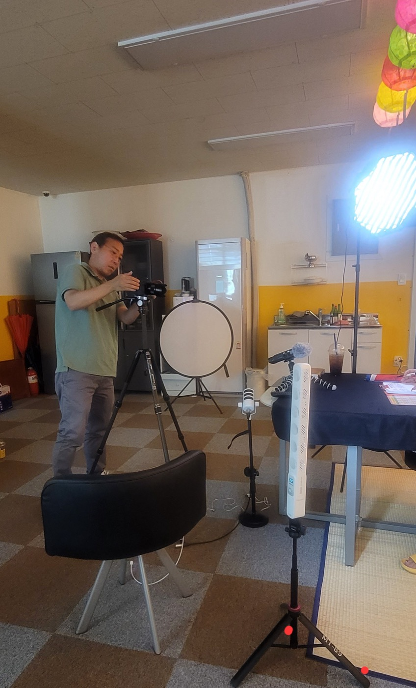
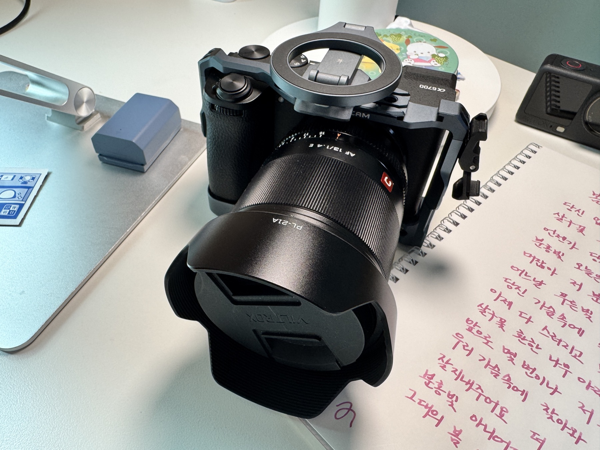
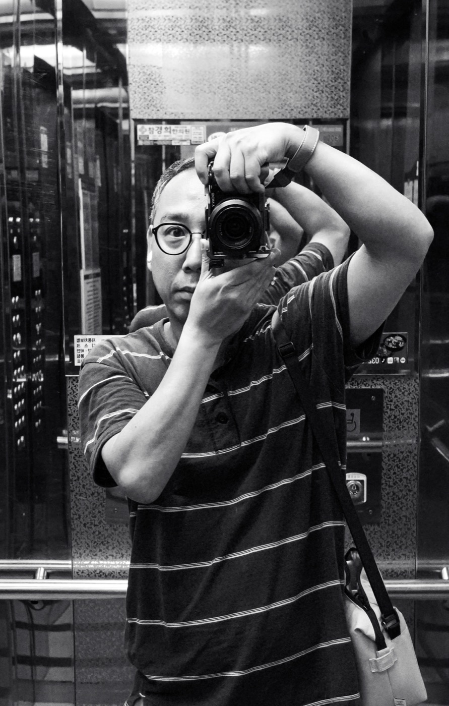
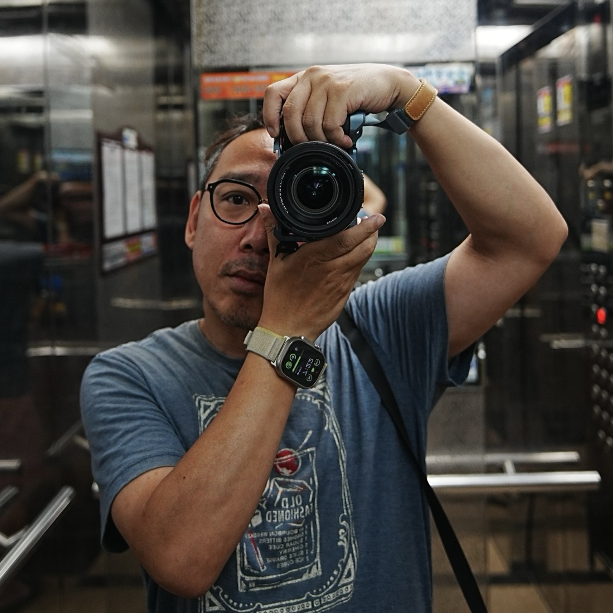
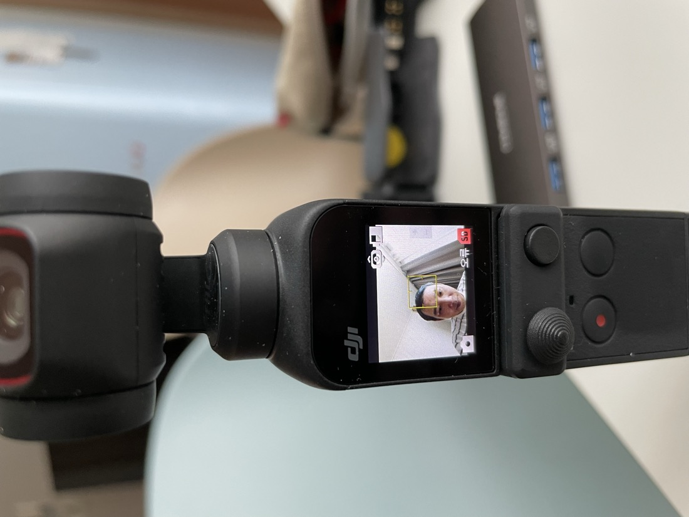
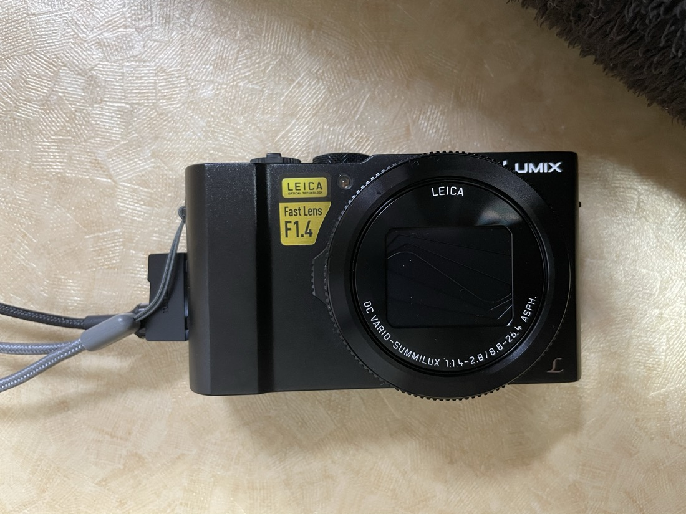
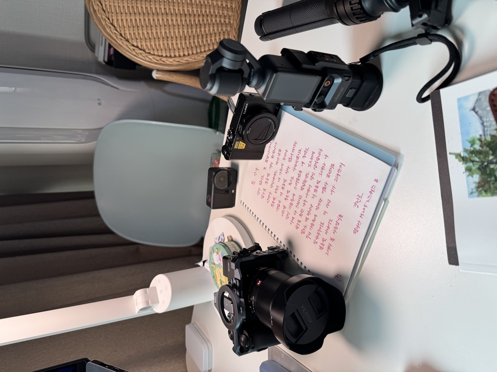
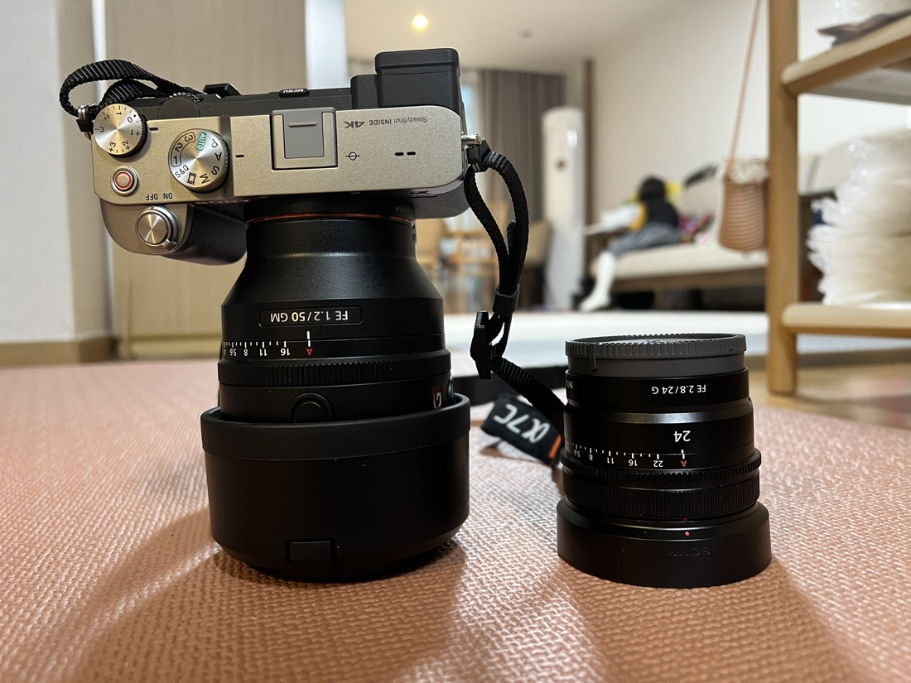
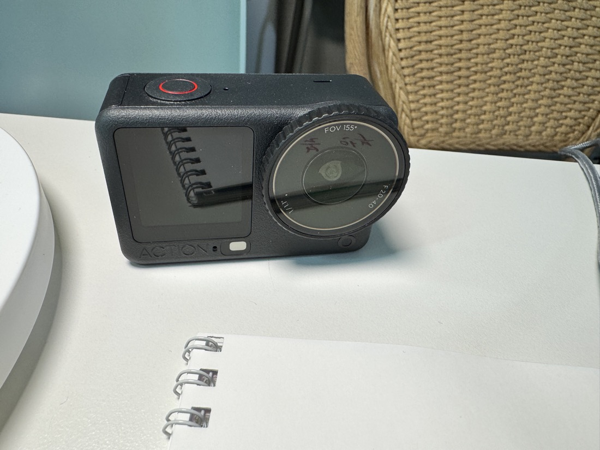

Cameras
Cameras / 카메라
무엇을 담을지 보는 별
Welcome note
찍는 것보다, 무엇을 찍을지 고르는 순간이 좋았다. 그 눈이 카메라를 들게 했고, 지금도 그 눈으로 화면을 고른다.
무엇을 담을지 아는 게 먼저다. 영상은 거기서 시작된다.

글 / 사진 기록
촬영 준비 / 프레임 / 현장

카메라와 현장의 흔적





